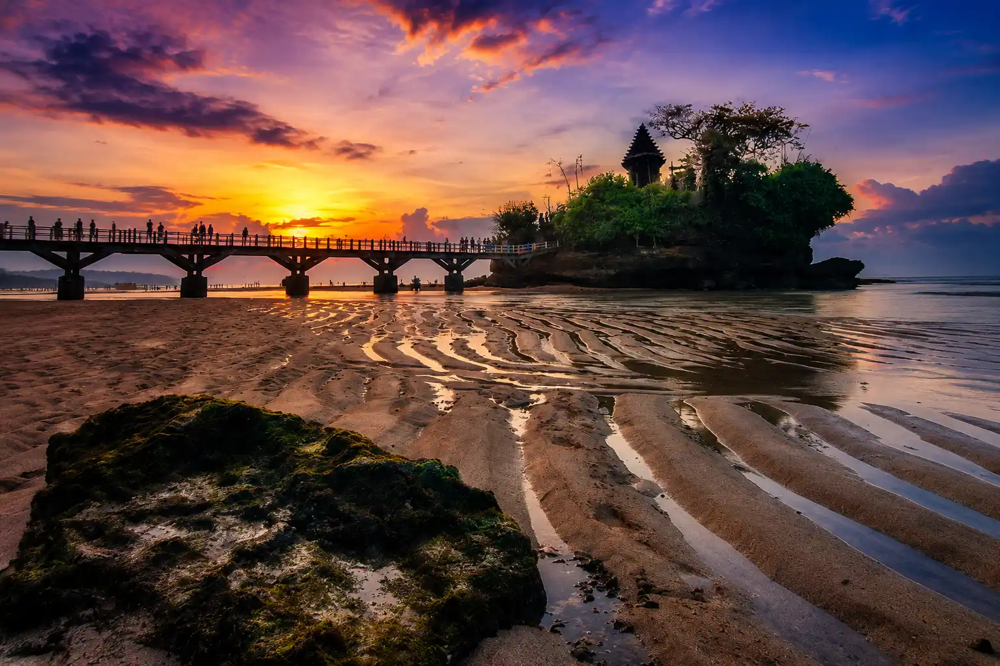
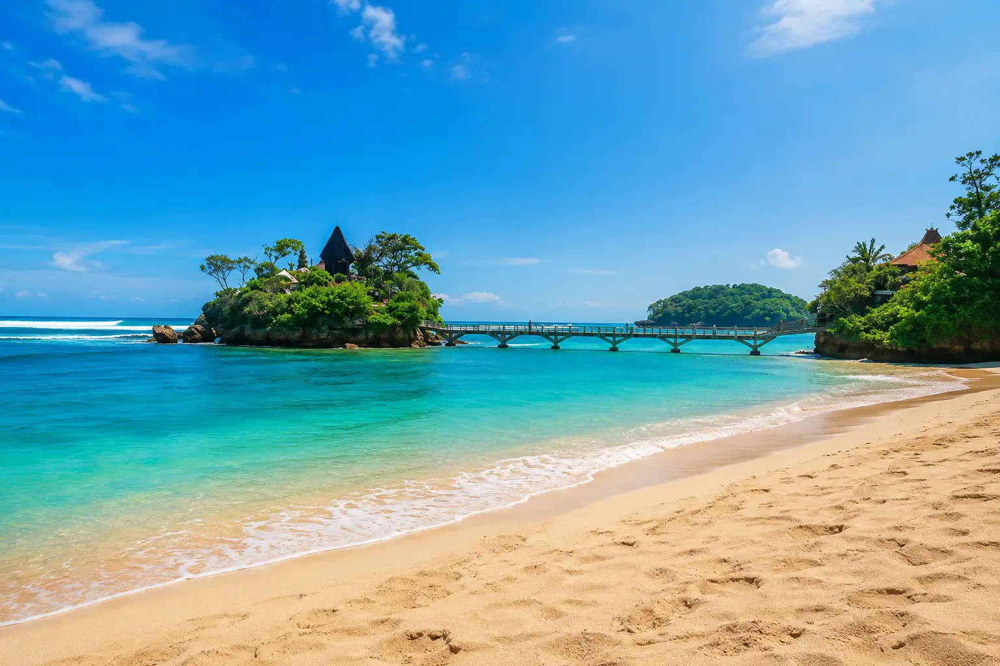

Detail Destinasi
Nikmati pesona keindahan alam pantai berpasir putih berpadu dengan kemegahan religi pura di atas batu karang.

Temukan Keajaibannya
Terletak di pesisir selatan Kabupaten Malang, Pantai Balekambang menawarkan panorama alam memukau dengan hamparan pasir putih luas dan deburan ombak khas Samudra Hindia. Daya tarik utamanya adalah keberadaan Pura Luhur Amertha Jati yang berdiri kokoh di atas Pulau Ismoyo, terhubung dengan jembatan beton estetik sepanjang 100 meter, menyuguhkan pemandangan magis yang sekilas sangat mirip dengan objek wisata Tanah Lot di Bali.
Atraksi yang Wajib Dikunjungi
Rasakan pengalaman liburan terbaik di kawasan wisata Pantai Balekambang
Pura Luhur Amertha Jati
Tempat ibadah umat Hindu yang megah di atas Pulau Ismoyo, menjadi ikon utama sekaligus pusat spiritualitas.

Jembatan Pulau Ismoyo
Jembatan ikonik yang menghubungkan bibir pantai utama dengan pura, menjadi spot foto terfavorit wisatawan.

Hamparan Pasir Putih
Garis pantai yang luas dan bersih, sangat ideal untuk aktivitas bermain pasir, bersantai, atau berjalan kaki.
Jelajahi Area Pantai
Peta lokasi interaktif titik-titik penting dan fasilitas utama di kawasan wisata Balekambang
Informasi Penting Perjalanan
Semua hal mendasar yang wajib Anda ketahui sebelum berkunjung ke Pantai Balekambang
Waktu Terbaik Berkunjung
Bulan Mei hingga September saat musim kemarau untuk menikmati sunset cerah, atau saat ritual adat Jalanidhi Puja & Suroan digelar.
Cuaca & Karakteristik
Iklim tropis pesisir dengan hembusan angin laut yang kencang. Ombak di pantai ini cukup besar karena berhadapan langsung dengan samudra lepas.
Mata Uang & Bahasa
Mata uang resmi yang digunakan adalah Rupiah (IDR). Bahasa komunikasi sehari-hari menggunakan Bahasa Indonesia dan Bahasa Jawa.
Tiket Masuk & Retribusi
Tiket masuk berkisar Rp20.000 per orang. Tarif parkir motor Rp5.000 dan mobil Rp10.000. Belum termasuk tarif inap jika Anda berniat camping.
Tips Lokal & Wawasan Budaya
- Dilarang keras berenang melampaui batas aman karena ombak laut selatan sangat kuat dan berbahaya.
- Jagalah kebersihan lingkungan dengan tidak membuang sampah sembarangan di area pantai maupun pulau karang.
- Gunakan tabir surya (sunscreen) dan siapkan kacamata hitam karena cuaca di siang hari bisa sangat terik.
- Jaga kesopanan dan hormati aturan adat, terutama bagi wanita yang sedang datang bulan dilarang masuk ke area utama pura.
- Pastikan kendaraan dalam kondisi prima karena jalur menuju Malang Selatan memiliki banyak kelokan tajam.
- Disarankan membawa uang tunai (cash) yang cukup karena ketersediaan mesin ATM di sekitar lokasi pantai terbatas.